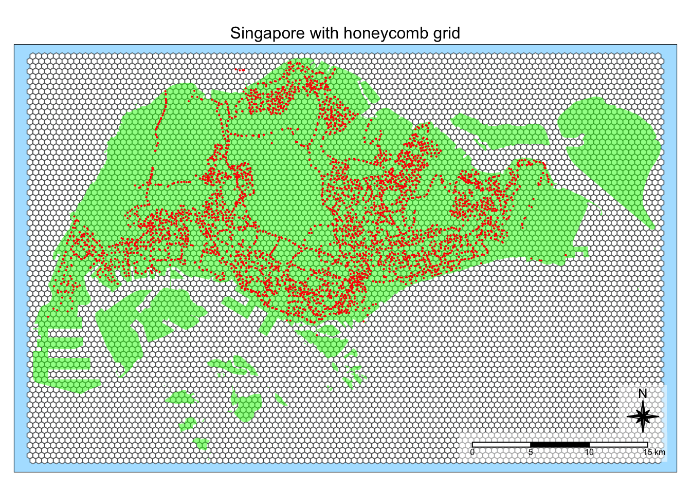

pacman::p_load(sf, tmap, tidyverse, knitr, sfdep)
tmap_mode("plot")
tmap_style("natural")
set.seed(1234)Take Home Exercise 1A: Data Wrangling
Overview
The aim of this study is to uncover spatial and spatio-temporal mobility patterns of public bus passengers in Singapore.
The main modes of analysis to be used here are Local Indicators of Spatial Association (GLISA) and Emerging Hot Spot Analysis (EHSA).
In doing these study, we will be looking at bus trips started during the hours below.
| Peak hour period | Bus tap on time |
|---|---|
| Weekday morning peak | 6am to 9am |
| Weekday evening peak | 5pm to 8pm |
| Weekend/holiday morning peak | 11am to 2pm |
| Weekend/holiday evening peak | 4pm to 7pm |
More details about the study can be found here.
In this part of the study, we will do data wrangling on the data sets so that they are transformed into a form that can be used for geovisualization and spatial analysis.
Setup
Preparing the data sets
Geospatial
This data sets are in shp format.
- Bus Stop Locations, available publicly from LTA DataMall
Aspatial
These data sets are in csv format.
- Master Plan 2019 Subzone Boundary (Web), originally from data.gov.sg but used the one provided on E-learn.
- Passenger Volume By Origin Destination Bus Stops from LTA DataMall via API (need to request for access)
August 2023
September 2023
October 2023 - we will focus on this as the main data set
Preparing the data/ directory
Before starting our analysis, we have to organize the data sets in a directory.
Geospatial data will be located under
data/geospatialAspatial data will be located under
data/aspatialdata/rdsto be created to store data that we can reuse and to make our code reproduceable.
Setting Up the R Environment
After preparing the data sets, we can finally proceed to load the R packages needed for this study.
Environment Settings
We will also set the default settings on for this document
tmap_modeto plot: for plotting simple mapstmap_styleto natural: for my preferred mapping styleset seed for reproducibility of results
Running the setup
We will label this code chunk as the setup chunk so the R runs it even after the environment restarts.
Methodology
After setting up the data sets and the R environment, we can finally proceed with data wrangling.
Goal data sets
To enable the visualization and analysis in latter part of the study, we need to have the following data sets:
Honeycomb geometry, a tessellation of hexagons covering the bus stops in Singapor
Hourly bus trips started from each hexagon cell
1 for weekend, 1 for weekend/holidays
Required columns:
HEX_ID,HOUR_OF_DAY,TRIPSMust contain geometry of the hexagon
Can be used to generate a time series cube
As the wrangling process is expected to have a lot of intermediate steps, Save, Load, and Data clear points are available to make our data wrangling more efficient.
Save point
This is where data is written as rds files using write_rds() for important data sets that will be used in later analysis. Examples are:
The end goal of data wrangling: Hourly bus trips started from each hexagon cell data sets
Critical outputs of expensive calculations
Load point
This is where data is loaded from rds files using read_rds(). They were previously generated by the save point.
TIP: Skip to the load points to progress without running the code above it
Data clear point
This is where data that will not be used anymore are cleared. The data in RStudio environment will pile up and set #| eval: false in code chunks if you want skip the clearing. For example, the code below won’t be run.
message <- "This code chunk executed"Generating hexagons from BusStop data
As per the specifications of this study, we must use a honeycomb grid, a tesselation of hexagons to replace the mpsz data set.
Why hexagons?
Some benefits of using a hexagons are:
A hexagon is the polygon with the most number of sides that can tessellate (or tile). Hence it is the most “circular” of the polygons that can be tessellated.
Distances of the centroid from one hexagon to the next are consistent all around the hexagon, making it easy to find neighbors.
More information about hexagons in the context of spatial analysis can be found in https://desktop.arcgis.com/en/arcmap/latest/tools/spatial-statistics-toolbox/h-whyhexagons.htm
Importing the Singapore boundary data
We will use the Master Plan 2019 Subzone Boundary (Web) data set that has been used in class. This is a shp file, that we will import by using st_read(). We will use this to ensure that the bus stops are within Singapore.
mpsz <- st_read(dsn = "data/geospatial",
layer = "MPSZ-2019")Reading layer `MPSZ-2019' from data source
`/Users/kjcpaas/Documents/Grad School/ISSS624/Project/ISSS624/Take-home_Ex1/data/geospatial'
using driver `ESRI Shapefile'
Simple feature collection with 332 features and 6 fields
Geometry type: MULTIPOLYGON
Dimension: XY
Bounding box: xmin: 103.6057 ymin: 1.158699 xmax: 104.0885 ymax: 1.470775
Geodetic CRS: WGS 84
Correcting the projection
Save point
Let’s save this geometry with corrected projection from plotting purposes.
write_rds(mpsz, "data/rds/mpsz.rds")Show the code
tmap_style("natural")
tm_shape(mpsz) +
tm_fill("lightgreen", title = "Singapore Boundary") +
tm_borders(alpha = 0.5) +
tm_layout(main.title = "Map of Singapore",
main.title.position = "center",
main.title.size = 1.0,
legend.height = 0.35,
legend.width = 0.35,
frame = TRUE) +
tm_compass(type="8star", size = 2) +
tm_scale_bar() +
tm_grid(alpha = 0.2)
Importing the BusStop data set
The BusStop data set is a in shp format. We can import it by using st_read() from the sf package.
busstops <- st_read(dsn = "data/geospatial",
layer = "BusStop")Reading layer `BusStop' from data source
`/Users/kjcpaas/Documents/Grad School/ISSS624/Project/ISSS624/Take-home_Ex1/data/geospatial'
using driver `ESRI Shapefile'
Simple feature collection with 5161 features and 3 fields
Geometry type: POINT
Dimension: XY
Bounding box: xmin: 3970.122 ymin: 26482.1 xmax: 48284.56 ymax: 52983.82
Projected CRS: SVY21
Correcting the projection
We want to use SVY21 as the projection for this study as it is the projection used for local Singaporean context.
After the import, it shows that the Projected CRSis SVY21. However, checking the CRS with st_crs() tells a different story.
st_crs(busstops)Coordinate Reference System:
User input: SVY21
wkt:
PROJCRS["SVY21",
BASEGEOGCRS["WGS 84",
DATUM["World Geodetic System 1984",
ELLIPSOID["WGS 84",6378137,298.257223563,
LENGTHUNIT["metre",1]],
ID["EPSG",6326]],
PRIMEM["Greenwich",0,
ANGLEUNIT["Degree",0.0174532925199433]]],
CONVERSION["unnamed",
METHOD["Transverse Mercator",
ID["EPSG",9807]],
PARAMETER["Latitude of natural origin",1.36666666666667,
ANGLEUNIT["Degree",0.0174532925199433],
ID["EPSG",8801]],
PARAMETER["Longitude of natural origin",103.833333333333,
ANGLEUNIT["Degree",0.0174532925199433],
ID["EPSG",8802]],
PARAMETER["Scale factor at natural origin",1,
SCALEUNIT["unity",1],
ID["EPSG",8805]],
PARAMETER["False easting",28001.642,
LENGTHUNIT["metre",1],
ID["EPSG",8806]],
PARAMETER["False northing",38744.572,
LENGTHUNIT["metre",1],
ID["EPSG",8807]]],
CS[Cartesian,2],
AXIS["(E)",east,
ORDER[1],
LENGTHUNIT["metre",1,
ID["EPSG",9001]]],
AXIS["(N)",north,
ORDER[2],
LENGTHUNIT["metre",1,
ID["EPSG",9001]]]]As we can see EPSG value is 9001, which correspond to WGS84. We have to fix the projection by transforming to EPSG value of 3414, which corresponds to SVY21.
busstops <- st_transform(busstops, crs = 3414)Next, let’s take a look at the available columns to identify which columns we can use for analysis.
kable(head(busstops))| BUS_STOP_N | BUS_ROOF_N | LOC_DESC | geometry |
|---|---|---|---|
| 22069 | B06 | OPP CEVA LOGISTICS | POINT (13576.31 32883.65) |
| 32071 | B23 | AFT TRACK 13 | POINT (13228.59 44206.38) |
| 44331 | B01 | BLK 239 | POINT (21045.1 40242.08) |
| 96081 | B05 | GRACE INDEPENDENT CH | POINT (41603.76 35413.11) |
| 11561 | B05 | BLK 166 | POINT (24568.74 30391.85) |
| 66191 | B03 | AFT CORFE PL | POINT (30951.58 38079.61) |
Note
From this initial look in the data, BUS_STOP_N and LOC_DESC can potentially be used to match records in the passenger volume data set.
Changing columns to factor
BUS_STOP_N has a finite set of values that we do not need to process sequentially so we will convert it as factor to make it easier to work with.
busstops$BUS_STOP_N <- as.factor(busstops$BUS_STOP_N)Generating hexagons from Singapore boundary data
Following the steps from https://urbandatapalette.com/post/2021-08-tessellation-sf/, we will use st_make_grid() to generate the hexagons for analysis.
We need to provide a value for cellsize in the function, which is defined as “for hexagonal cells the distance between opposite edges”. We need to create hexagons whose apothem is 250m, resulting in a cell size of 500m.
Why is cell size 500 m?
Apothem is defined as the perpendicular from the center of a regular polygon to one of the sides.
The specification is this study requires hexagons to be 250 m from the center of the hexagon to the center of one of it’s edge.

As such, this corresponds to the length of 2 opposite apothems, which is 500 m.
The edge length is not the same as apothem. It is 288.675m.
\[ 250m/cos(30) = 288.675m \]
We will use the mpsz data to ensure that the honeycomb grid perfectly covers the Singapore boundaries
honeycomb <-
st_make_grid(mpsz,
cellsize = 500,
what = "polygon",
square = FALSE) %>%
st_sf()Checking the generated hexagons reveals that it covers all the bus stops.
Show the code
tm_shape(honeycomb) +
tm_fill(col = "white", title = "Hexagons") +
tm_borders(alpha = 0.5) +
tm_layout(main.title = "Singapore with honeycomb grid",
main.title.position = "center",
main.title.size = 1.0,
legend.height = 0.35,
legend.width = 0.35,
frame = TRUE) +
tm_compass(type="8star", size = 2, bg.color = "white", bg.alpha = 0.5) +
tm_scale_bar(bg.color = "white", bg.alpha = 0.5) +
tm_shape(mpsz) +
tm_fill("green", title = "Singapore Boundary", alpha = 0.5) +
tm_shape(busstops) +
tm_dots(col = "red", size = 0.005, title = "Bus Stops")
About those points outside Singapore
The map shows that there are bus stops in our data set that our outside Singapore bounds (green area). We can remove these points from our busstops data by following the filtering steps from https://urbandatapalette.com/post/2021-08-tessellation-sf/.
We will st_intersects() to see which points in busstops intersect with mpsz, and filter those that intersect.
busstops$n_collisions = lengths(st_intersects(busstops, mpsz))
busstops <-
filter(busstops, n_collisions > 0) %>%
select(, -n_collisions) # Remove n_collisions as we do not need it anymorePlotting again shows that all bus stops are now within Singapore bounds.
Show the code
tm_shape(honeycomb) +
tm_fill(col = "white", title = "Hexagons") +
tm_borders(alpha = 0.5) +
tm_layout(main.title = "Honeycomb grid without bus stops outside of Singapore",
main.title.position = "center",
main.title.size = 1.0,
legend.height = 0.35,
legend.width = 0.35,
frame = TRUE) +
tm_compass(type="8star", size = 2, bg.color = "white", bg.alpha = 0.5) +
tm_scale_bar(bg.color = "white", bg.alpha = 0.5) +
tm_shape(mpsz) +
tm_fill("green", title = "Singapore Boundary", alpha = 0.5) +
tm_shape(busstops) +
tm_dots(col = "red", size = 0.005, title = "Bus Stops")
Filtering hexagons with bus stops
The honeycomb grid generated from Generating hexagons from Singapore boundary data need to be filtered such that the hexagons remaining correspond to only those with bus stops.
We can do this by following the filtering steps from https://urbandatapalette.com/post/2021-08-tessellation-sf/. We will use st_intersects() to identify which hexagons intersect with bus stop locations.
honeycomb$n_collisions = lengths(st_intersects(honeycomb, busstops))
honeycomb <- filter(honeycomb, n_collisions > 0)Let’s generate the map again to check if we have the hexagons that correspond to bus stop locations.
Show the code
tm_shape(mpsz) +
tm_fill("green", title = "Singapore Boundary", alpha = 0.5) +
tm_shape(honeycomb) +
tm_fill(col = "white", title = "Hexagons", alpha = 1) +
tm_borders(alpha = 0.2) +
tm_layout(main.title = "Honeycomb grid corresponding to Singapore bus stops",
main.title.position = "center",
main.title.size = 1.0,
legend.height = 0.35,
legend.width = 0.35,
frame = TRUE) +
tm_compass(type="8star", size = 2, bg.color = "white", bg.alpha = 0.5) +
tm_scale_bar(bg.color = "white", bg.alpha = 0.5) +
tm_shape(busstops) +
tm_dots(col = "red", size = 0.001, title = "Bus Stops") +
tm_grid(alpha = 0.2)
Assigning ids to each hexagon
Here is the structure of our honeycomb data:
kable(head(honeycomb, n=3))| geometry | n_collisions |
|---|---|
| POLYGON ((3917.538 28017.41… | 1 |
| POLYGON ((4417.538 30615.49… | 1 |
| POLYGON ((4667.538 28450.43… | 2 |
Remove n-collisions
We do not need n-collisions anymore so we can remove it.
honeycomb <- honeycomb %>% select(, -n_collisions)This data is still incomplete as we need to associate the hexagons to aspatial data, which is critical to the next steps in our data wrangling.
For this purpose, we will assign HEX_ID with format H0000.
honeycomb$HEX_ID <- sprintf("H%04d", seq_len(nrow(honeycomb))) %>% as.factor()
kable(head(honeycomb)) | geometry | HEX_ID |
|---|---|
| POLYGON ((3917.538 28017.41… | H0001 |
| POLYGON ((4417.538 30615.49… | H0002 |
| POLYGON ((4667.538 28450.43… | H0003 |
| POLYGON ((4667.538 30182.48… | H0004 |
| POLYGON ((4667.538 31048.5,… | H0005 |
| POLYGON ((4917.538 28883.44… | H0006 |
Save point
honeycomb is the geometry that we will use for analysis. It will be used for tasks such as identifying neighbors and calculating spatial weights.
Is it also one of the Goal data sets we need. Hence, we will save it.
write_rds(honeycomb, "data/rds/honeycomb202310.rds")
Data clear point
We do not need mpsz anymore as we have generated hexagons already. For further analysis, we will overlay the hexagons to the Singapore map with tmap_mode("plot") to use interactive maps for closer inspection.
rm(mpsz)Extracting Hourly # of Bus Trips Originating from Hexagons
The goal for this part of data wrangling is to have information on how many trips started from each hexagon for every given hour of the day.
We will use the Passenger Volume By Origin Destination Bus Stops from LTA DataMall via API for the months of August, September, October 2023.
For demonstrating the steps, we will use the October 2023 data set. The same steps will be applied to the other data sets later on.
If you want to run the code for August 2023 and September 2023, replace 202310, with 202308 or 202309. Our code can be used to analyze this dataset from any month.
Importing the data set
The data set is an aspatial data in csv format so we will use read_csv() to import the data.
odbus <- read_csv("data/aspatial/origin_destination_bus_202310.csv")
kable(head(odbus))| YEAR_MONTH | DAY_TYPE | TIME_PER_HOUR | PT_TYPE | ORIGIN_PT_CODE | DESTINATION_PT_CODE | TOTAL_TRIPS |
|---|---|---|---|---|---|---|
| 2023-10 | WEEKENDS/HOLIDAY | 16 | BUS | 04168 | 10051 | 3 |
| 2023-10 | WEEKDAY | 16 | BUS | 04168 | 10051 | 5 |
| 2023-10 | WEEKENDS/HOLIDAY | 14 | BUS | 80119 | 90079 | 3 |
| 2023-10 | WEEKDAY | 14 | BUS | 80119 | 90079 | 5 |
| 2023-10 | WEEKDAY | 17 | BUS | 44069 | 17229 | 4 |
| 2023-10 | WEEKENDS/HOLIDAY | 17 | BUS | 20281 | 20141 | 1 |
The relevant columns for our data study are DAY_TYPE, TIME_PER_HOUR, ORIGIN_PT_CODE, TOTAL_TRIPS
We do not need the DESTINATION_PT_CODE as we are only interested on when passengers get on the bus.
Furthermore, the ORIGIN_PT_CODE can be correlated to the BUS_STOP_N column of busstops data.
Recap of
busstops data
kable(head(busstops))| BUS_STOP_N | BUS_ROOF_N | LOC_DESC | geometry |
|---|---|---|---|
| 22069 | B06 | OPP CEVA LOGISTICS | POINT (13576.31 32883.65) |
| 32071 | B23 | AFT TRACK 13 | POINT (13228.59 44206.38) |
| 44331 | B01 | BLK 239 | POINT (21045.1 40242.08) |
| 96081 | B05 | GRACE INDEPENDENT CH | POINT (41603.76 35413.11) |
| 11561 | B05 | BLK 166 | POINT (24568.74 30391.85) |
| 66191 | B03 | AFT CORFE PL | POINT (30951.58 38079.61) |
Cleaning the data
Before going deep in the wrangling, we will clean up the data so that we are left with a lightweight data set that R can process more easily. We will retain and rename columns below to make them more understandable and easier to join with other data sets.
DAY_TYPETIME_PER_HOUR->HOUR_OF_DAYORIGIN_PT_CODE->BUS_STOP_NTOTAL_TRIPS->TRIPS
We will also rename the columns to make them more understandable and will make joining with other data sets easier.
Lastly, will also convert BUS_STOP_N to factor as it has a finite set of values so we can convert it to categorical data to make it easier to work with.
trips <- odbus %>%
select(c(ORIGIN_PT_CODE, DAY_TYPE, TIME_PER_HOUR, TOTAL_TRIPS)) %>%
rename(BUS_STOP_N = ORIGIN_PT_CODE) %>%
rename(HOUR_OF_DAY = TIME_PER_HOUR) %>%
rename(TRIPS = TOTAL_TRIPS)
trips$BUS_STOP_N <- as.factor(trips$BUS_STOP_N)
kable(head(trips))| BUS_STOP_N | DAY_TYPE | HOUR_OF_DAY | TRIPS |
|---|---|---|---|
| 04168 | WEEKENDS/HOLIDAY | 16 | 3 |
| 04168 | WEEKDAY | 16 | 5 |
| 80119 | WEEKENDS/HOLIDAY | 14 | 3 |
| 80119 | WEEKDAY | 14 | 5 |
| 44069 | WEEKDAY | 17 | 4 |
| 20281 | WEEKENDS/HOLIDAY | 17 | 1 |
Data clear point
We do not need odbus anymore as we will be working with the more lightweight trips from this point on.
rm(odbus)Mapping the bus stops to hexagon
In Filtering hexagons with bus stops we were able to overlay the bus locations to our generated hexagon. While this is enough for visualization, it is not enough for the rest of the data processing we need.
From Cleaning the data, we have the BUS_STOP_N in the that we can use to associate with busstops.
We need to create an aspatial table that contain BUS_STOP_N and HEX_ID of the hexagon containing them. We will use st_intersection().
Why aspatial?
We want to use generate a simple mapping here as this table will serve as a “glue” between the other aspatial data sets and our geospatial data, honeycomb.
bs_hex <- st_intersection(busstops, honeycomb) %>%
st_drop_geometry() %>%
select(c(BUS_STOP_N, HEX_ID))
kable(head(bs_hex))| BUS_STOP_N | HEX_ID | |
|---|---|---|
| 3265 | 25059 | H0001 |
| 254 | 26379 | H0002 |
| 2566 | 25751 | H0003 |
| 2893 | 25761 | H0003 |
| 4199 | 26389 | H0004 |
| 2399 | 26369 | H0005 |
Adding HEX_ID information to bus trips data
To achieve our goal of having the hourly # of bus trips per location, we need to add HEX_ID to trips data. This is so we can answer, how many bus trip originate from a certain hexagon?
To do this, we will do an inner_join() to join the trips data with bs_hex.
Why `inner_join()` instead of `left_join()`?
We will use inner_join as there are BUS_STOP_N values in trips data that are not in bs_hex.
trips$BUS_STOP_N[!(trips$BUS_STOP_N %in% bs_hex$BUS_STOP_N)] %>%
unique() %>% length()[1] 63There are 57 bus stops in trips that are not in bs_hex. 5 of this can be attributed the bus stops we removed in About those points outside Singapore. Others may be due to the BusStops data set not having complete information.
Nonetheless, we have to remove these bus stops from our analysis as we do not have geospatial data to associate to the hexagons.
Therefore, we will use inner_join to keep only the observations in trips with the matching bus stops in bs_hex.
trips <- inner_join(trips, bs_hex)
kable(head(trips))| BUS_STOP_N | DAY_TYPE | HOUR_OF_DAY | TRIPS | HEX_ID |
|---|---|---|---|---|
| 04168 | WEEKENDS/HOLIDAY | 16 | 3 | H0955 |
| 04168 | WEEKDAY | 16 | 5 | H0955 |
| 80119 | WEEKENDS/HOLIDAY | 14 | 3 | H1102 |
| 80119 | WEEKDAY | 14 | 5 | H1102 |
| 44069 | WEEKDAY | 17 | 4 | H0410 |
| 20281 | WEEKENDS/HOLIDAY | 17 | 1 | H0388 |
Aggregating TRIPS based on HEX_ID
Next, we will add the TRIPS for all the bus stops within a hexagon. We will group via HEX_ID, DAY_TYPE, and HOUR_OF_DAY.
trips <- trips %>%
group_by(
HEX_ID,
DAY_TYPE,
HOUR_OF_DAY) %>%
summarise(TRIPS = sum(TRIPS))
kable(head(trips))| HEX_ID | DAY_TYPE | HOUR_OF_DAY | TRIPS |
|---|---|---|---|
| H0001 | WEEKDAY | 7 | 74 |
| H0001 | WEEKDAY | 8 | 19 |
| H0001 | WEEKDAY | 9 | 10 |
| H0001 | WEEKDAY | 10 | 7 |
| H0001 | WEEKDAY | 16 | 26 |
| H0001 | WEEKDAY | 17 | 122 |
Save point
trips was processed from Passenger Volume By Origin Destination Bus Stops, which has almost 6 million observations.
We now have a more lightweight dataset with almost 60,000 observations, which is about 100x smaller.
Let’s save this data as an rds file so we don’t need to reprocess again later on.
write_rds(trips, "data/rds/trips202310.rds")Generating time series cube-friendly data
Load point
We can run the rest of the document from this point by loading this data.
trips <- read_rds("data/rds/trips202310.rds")
honeycomb <- read_rds("data/rds/honeycomb202310.rds")When doing Emerging Hotspot Analysis (EHSA), we need to create a time series cube. To do that we must pass the following criteria:
It must have a row for each combination of
HEX_ID(location) andHOUR_OF_DAY(time)There are no missing values in
TRIPScolumn
Is our trips data time series cube-friendly? The answer is NO.
spacetime(trips, honeycomb,
.loc_col = "HEX_ID",
.time_col = "HOUR_OF_DAY") %>%
is_spacetime_cube()[1] FALSEWe do not pass the first requirement for generating a time series cube
It must have a row for each combination of
HEX_ID(location) andHOUR_OF_DAY(time)
Generating the combinations
How many combinations are there? The answer is 36,456.
To satisfy the requirement of:
It must have a row for each combination of
HEX_ID(location) andHOUR_OF_DAY(time)
We need to find out how many such combinations exist.
There are 1519 hexagons in our
honeycombThere are 24 hours in a day
Therefore, there are \(1519 \times 24 = 36,456\) combinations. We will use this value to verify if we have the correct space time cube.
To generate the combinations, we will use expand.grid() and for us to provide the list possible values for HEX_ID and HOUR_OF_DAY.
combos <- expand_grid(
HEX_ID = honeycomb$HEX_ID,
HOUR_OF_DAY = 0:23
)
kable(combos[20:29,])| HEX_ID | HOUR_OF_DAY |
|---|---|
| H0001 | 19 |
| H0001 | 20 |
| H0001 | 21 |
| H0001 | 22 |
| H0001 | 23 |
| H0002 | 0 |
| H0002 | 1 |
| H0002 | 2 |
| H0002 | 3 |
| H0002 | 4 |
combos also has 36,456 rows, aligned with our expectations.
nrow(combos)[1] 36456With this generated, we can use this as a glue to generate our time series cube.
Splitting the data
As we want to do separate analysis for weekdays and weekends, we will split the data. We will also remove the DAY_TYPE column as we do not need it anymore. To do this, we have to ungroup() before removing as we use DAY_TYPE as filter.
trips_wkdy <- trips %>%
filter(DAY_TYPE == "WEEKDAY") %>%
ungroup() %>%
select(, -DAY_TYPE)
kable(trips_wkdy[20:29,])| HEX_ID | HOUR_OF_DAY | TRIPS |
|---|---|---|
| H0002 | 16 | 257 |
| H0002 | 17 | 159 |
| H0002 | 18 | 62 |
| H0002 | 19 | 42 |
| H0002 | 20 | 28 |
| H0002 | 21 | 2 |
| H0002 | 22 | 2 |
| H0003 | 6 | 44 |
| H0003 | 7 | 69 |
| H0003 | 8 | 72 |
trips_wknd <- trips %>%
filter(DAY_TYPE == "WEEKENDS/HOLIDAY") %>%
ungroup() %>%
select(, -DAY_TYPE)
kable(trips_wknd[20:29,])| HEX_ID | HOUR_OF_DAY | TRIPS |
|---|---|---|
| H0002 | 16 | 42 |
| H0002 | 17 | 15 |
| H0002 | 18 | 32 |
| H0002 | 19 | 11 |
| H0002 | 20 | 13 |
| H0002 | 21 | 5 |
| H0002 | 22 | 2 |
| H0003 | 6 | 37 |
| H0003 | 7 | 40 |
| H0003 | 8 | 35 |
Checking if split covers the full data
Let’s check the total rows in trips_wkdy and trips_wknd add up to the number of rows in trips.
nrow(trips_wkdy) + nrow(trips_wknd) == nrow(trips)[1] TRUEThere are no lost data so we can proceed to the next step.
Data clear point
We do not need trips anymore as we will be using trips_wkdy and trips_wknd from this point.
rm(trips)Filling in the all the combos
Now that we have separate data frames for weekday and weekend/holiday, we need to make sure that our data frame as all the combination in combos. We can do that by joining trips_wkxx with combos.
trips_cube_wkdy <- left_join(combos, trips_wkdy)
kable(head(trips_cube_wkdy, n = 24))| HEX_ID | HOUR_OF_DAY | TRIPS |
|---|---|---|
| H0001 | 0 | NA |
| H0001 | 1 | NA |
| H0001 | 2 | NA |
| H0001 | 3 | NA |
| H0001 | 4 | NA |
| H0001 | 5 | NA |
| H0001 | 6 | NA |
| H0001 | 7 | 74 |
| H0001 | 8 | 19 |
| H0001 | 9 | 10 |
| H0001 | 10 | 7 |
| H0001 | 11 | NA |
| H0001 | 12 | NA |
| H0001 | 13 | NA |
| H0001 | 14 | NA |
| H0001 | 15 | NA |
| H0001 | 16 | 26 |
| H0001 | 17 | 122 |
| H0001 | 18 | 224 |
| H0001 | 19 | 38 |
| H0001 | 20 | 6 |
| H0001 | 21 | NA |
| H0001 | 22 | NA |
| H0001 | 23 | NA |
Check if the output has the same rows as combos.
nrow(trips_cube_wkdy) == nrow(combos)[1] TRUEtrips_cube_wknd <- left_join(combos, trips_wknd)
kable(head(trips_cube_wknd, n = 24))| HEX_ID | HOUR_OF_DAY | TRIPS |
|---|---|---|
| H0001 | 0 | NA |
| H0001 | 1 | NA |
| H0001 | 2 | NA |
| H0001 | 3 | NA |
| H0001 | 4 | NA |
| H0001 | 5 | NA |
| H0001 | 6 | NA |
| H0001 | 7 | 28 |
| H0001 | 8 | 9 |
| H0001 | 9 | 9 |
| H0001 | 10 | 2 |
| H0001 | 11 | NA |
| H0001 | 12 | NA |
| H0001 | 13 | NA |
| H0001 | 14 | NA |
| H0001 | 15 | NA |
| H0001 | 16 | 3 |
| H0001 | 17 | 21 |
| H0001 | 18 | 18 |
| H0001 | 19 | 14 |
| H0001 | 20 | 1 |
| H0001 | 21 | NA |
| H0001 | 22 | NA |
| H0001 | 23 | NA |
Check if the output has the same rows as combos.
nrow(trips_cube_wknd) == nrow(combos)[1] TRUEThe data frames generated now passes
It must have a row for each combination of
HEX_ID(location) andHOUR_OF_DAY(time)
The data frames generated violate
There are no missing values in
TRIPScolumn
This is because there are some HOUR_OF_DAY where the value of TRIPS is NA. We need to fill in these missing values.
Data clear point
We do not need trips_wkxx anymore as we will be using trips_cube_wkxx from this point on.
rm(trips_wkdy)
rm(trips_wknd)Filling in missing values
Lastly, we need to fill in the missing values in TRIPS. This can be done by filtering the rows with NA and setting those to 0.
trips_cube_wkdy$TRIPS[is.na(trips_cube_wkdy$TRIPS)] <- 0
kable(head(trips_cube_wkdy, n = 24))| HEX_ID | HOUR_OF_DAY | TRIPS |
|---|---|---|
| H0001 | 0 | 0 |
| H0001 | 1 | 0 |
| H0001 | 2 | 0 |
| H0001 | 3 | 0 |
| H0001 | 4 | 0 |
| H0001 | 5 | 0 |
| H0001 | 6 | 0 |
| H0001 | 7 | 74 |
| H0001 | 8 | 19 |
| H0001 | 9 | 10 |
| H0001 | 10 | 7 |
| H0001 | 11 | 0 |
| H0001 | 12 | 0 |
| H0001 | 13 | 0 |
| H0001 | 14 | 0 |
| H0001 | 15 | 0 |
| H0001 | 16 | 26 |
| H0001 | 17 | 122 |
| H0001 | 18 | 224 |
| H0001 | 19 | 38 |
| H0001 | 20 | 6 |
| H0001 | 21 | 0 |
| H0001 | 22 | 0 |
| H0001 | 23 | 0 |
trips_cube_wknd$TRIPS[is.na(trips_cube_wknd$TRIPS)] <- 0
kable(head(trips_cube_wknd, n = 24))| HEX_ID | HOUR_OF_DAY | TRIPS |
|---|---|---|
| H0001 | 0 | 0 |
| H0001 | 1 | 0 |
| H0001 | 2 | 0 |
| H0001 | 3 | 0 |
| H0001 | 4 | 0 |
| H0001 | 5 | 0 |
| H0001 | 6 | 0 |
| H0001 | 7 | 28 |
| H0001 | 8 | 9 |
| H0001 | 9 | 9 |
| H0001 | 10 | 2 |
| H0001 | 11 | 0 |
| H0001 | 12 | 0 |
| H0001 | 13 | 0 |
| H0001 | 14 | 0 |
| H0001 | 15 | 0 |
| H0001 | 16 | 3 |
| H0001 | 17 | 21 |
| H0001 | 18 | 18 |
| H0001 | 19 | 14 |
| H0001 | 20 | 1 |
| H0001 | 21 | 0 |
| H0001 | 22 | 0 |
| H0001 | 23 | 0 |
Is our data frame time series cube-friendly? The answer is YES.
Let us check of our data frame can be used to create spacetime cubes.
Weekend
spacetime(trips_cube_wkdy, honeycomb,
.loc_col = "HEX_ID",
.time_col = "HOUR_OF_DAY") %>%
is_spacetime_cube()[1] TRUEWeekend/Holiday
spacetime(trips_cube_wknd, honeycomb,
.loc_col = "HEX_ID",
.time_col = "HOUR_OF_DAY") %>%
is_spacetime_cube()[1] TRUE
Save point
trips_cube_wkxx data is part the Goal data sets we need. Hence, we will save them.
write_rds(trips_cube_wkdy, "data/rds/trips_cube_wkdy202310.rds")
write_rds(trips_cube_wknd, "data/rds/trips_cube_wknd202310.rds")